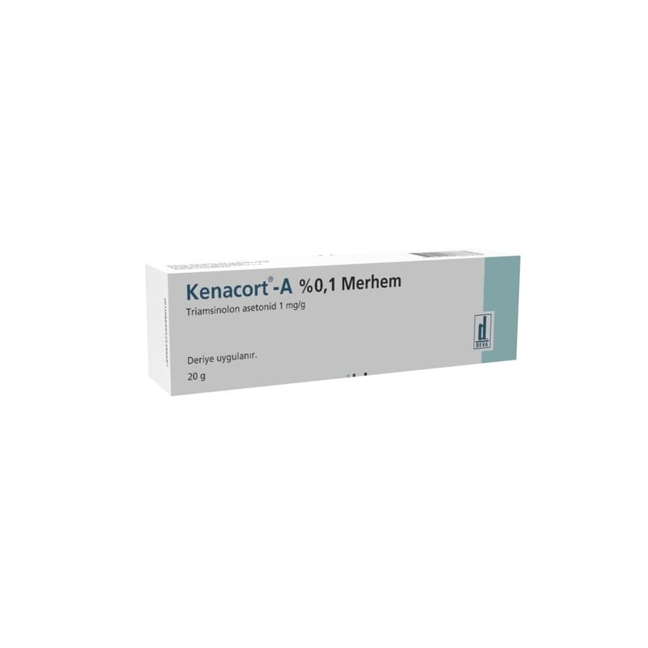

Kenacort-A %0,1 Merhem, 5 g

Ne için kullanılır
KT · Bölüm 1KENACORT-A % 0,1 merhem, 5 g, 10 g ve 20 g merhem içeren tüplerde kullanıma sunulmaktadır.
KENACORT-A, triamsinolon asetonid adı verilen bir etkin madde içerir.
Triamsinolon asetonid, kortikosteroidler olarak adlandırılan bir ilaç grubuna dahildir ve derideki tahriĢi önlemek için kullanılır.
KENACORT-A, cilt hastalıklarının (egzema ve psöriasis gibi) iltihap ve Ģiddetli kaĢıntı gibi belirtilerinin tedavisinde kullanılır.